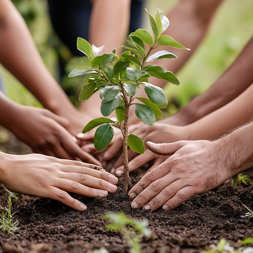

📰 ዜና እና ወቅታዊ ማስታወቂያዎች
🌳 የአካባቢውን ሥነ-ምህዳር ለመቀየር የተከናወኑ የአረንጓዴ አሻራ ልማት ሥራዎች
የዘንድሮ ዕቅድ 📌
የአዋሽ ውጊያ ቴክኒክ ትምህርት ቤት የሚገኝበት አካባቢ እጅግ ሞቃታማ የአየር ፀባይ እንደመሆኑ መጠን፣ ተቋቁሞ ለመሥራትና ሰብዓዊም ሆነ ቁሳዊ ሀብቱን ጤናማ በሆነ ሁኔታ መንከባከብ እንዲቻል ከሥልጠናው ጎን ለጎን ቅድሚያ ተሰጥቶት ሲሠራ የነበረው የአካባቢውን ሥነ-ምህዳር ለመቀየር የተሠሩ ሥራዎች ናቸው። ትምህርት ቤቱ ከተመሠረተበት ጊዜ አንስቶ በርካታ ሥራዎችን ያከናወነ ሲሆን፣ የትምህርት ቤቱን ማህበረሰብ እና በየጊዜው ለሥልጠና የሚመጡ ሰልጣኞችን በማስተባበር በመኖሪያ ቤቶች፣ በማስተማሪያ ክፍሎች፣ በመንገድ ዳሮችና ክፍት ቦታዎች ዙሪያውን የጥላ ዛፎች እንዲተከሉ በማድረግ እና ተንከባክቦ በማሳደግ እንደ ትምህርት ቤቱ ባህል በመቁጠር ማንኛውም አዳዲስ መሠረተ-ልማቶች ሲገነቡ ይህን አረንጓዴ ልማት በተጓዳኝ በማስቀጠል አካባቢውን ለኑሮ ምቹ የማድረግ ሥራ ተሠርቷል፤ አሁንም በመሠራት ላይ ይገኛል።
በዚሁ ቀጣይነት ባለው ታላቅ ስኬት መሠረት፣ በትምህርት ቤቱ በዘንድሮው የ2018 በጀት ዓመት የትምህርት ቤቱን መላው ማህበረሰብና ሰልጣኞችን በከፍተኛ ንቅናቄ በማስተባበር 12,000 (አሥራ ሁለት ሺህ) አዳዲስ የጥላና የፍራፍሬ ዛፎችን ለመትከልና የመንከባከብ ሥራውን ይበልጥ አጠናክሮ ለማስቀጠል ተቋሙ ሙሉ ዝግጁነቱን አረጋግጧል።
🌾 በምግብ ራስን ለመቻል የተከናወኑ የግብርናና የመስኖ ልማት ሥራዎች
ወቅታዊ ልማት 📌
የውጊያ ቴክኒክ ትምህርት ቤት የሰራዊቱን ሁለንተናዊ አቅም ከመገንባት ጎን ለጎን፣ በምግብ ዋስትና ራሱን ለመቻልና የወጪ ጫናን ለመቀነስ በልማት ዘርፍ አመርቂ ሥራዎችን እያከናወነ ይገኛል። ትምህርት ቤቱ ሰፊ የመስኖ ልማት መሠረተ-ልማቶችን በመዘርጋት የሽንኩርት፣ የቲማቲምና የልዩ ልዩ አትክልቶች ምርትን በከፍተኛ ጥራትና በብዛት ማምረት ችሏል። ይህ ተግባር በተቋሙ ውስጥ የሚገኙ አባላትንና ሰልጣኞችን የዕለት ተዕለት የምግብ አቅርቦት በራስ አቅም በበቂ ሁኔታ ለመሸፈን ትልቅ ሚና እየተጫወተ ያለና ይበልጥ ተጠናክሮ የሚቀጥል ታላቅ ስኬት ነው።